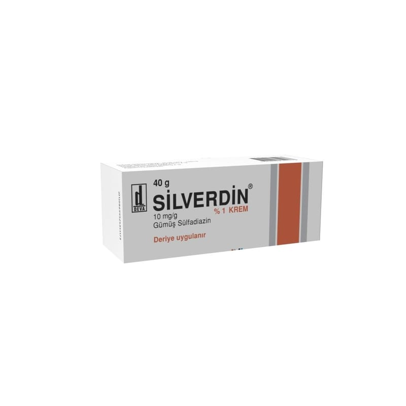

Silverdin % 1 Krem, 400 g

Ne için kullanılır
KT · Bölüm 1 SĠLVERDĠN, etkin maddesi gümüĢ sülfadiazin olan kremdir. SĠLVERDĠN beyaz, kokusuz yumuĢak kıvamlı ve homojen görünüĢlü kremdir. GümüĢ sülfadiazin, yara veya yanık bölgelerinde iltihaplanmalara (enfeksiyonlara) yol açan bakterileri öldürerek etki gösterir. SĠLVERDĠN; 40 gr’lık ağız kısmı folyolu tüplerde ve 400 g’lık kavanozlarda bulunur; SĠLVERDĠN’in 1 gramı 10 mg gümüĢ sülfadiazin içerir. SĠLVERDĠN; yanık ve yaralarda ortaya çıkan iltihaplanmaların (enfeksiyonların) önlenmesinde ve tedavisinde, Bacak ülserleri ve bası yaralarında (yatak yaralarında) ortaya çıkan iltihaplanmaların (enfeksiyonların) kısa süreli tedavisinde yardımcı olarak, Deri nakli yapılan yerlerde ve geniĢ ölçülü yıpranmaların sonucu ortaya çıkan iltihaplanmaların (enfeksiyonların) önlenmesinde yardımcı olarak, Parmağın etli kısmı, tırnak kaybı ve/veya parmak ucunun kısmi kaybının (distal falanksın parsiyel kaybının) olduğu parmak ucu yaralanmalarında koruyucu olarak kullanılır.